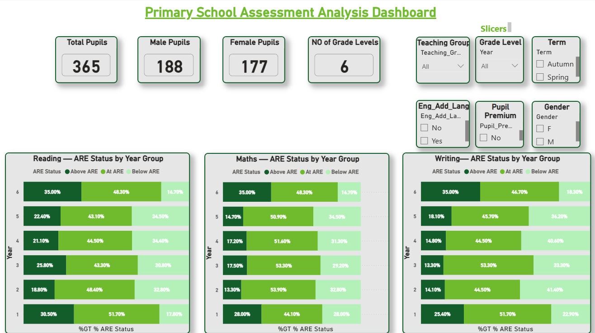
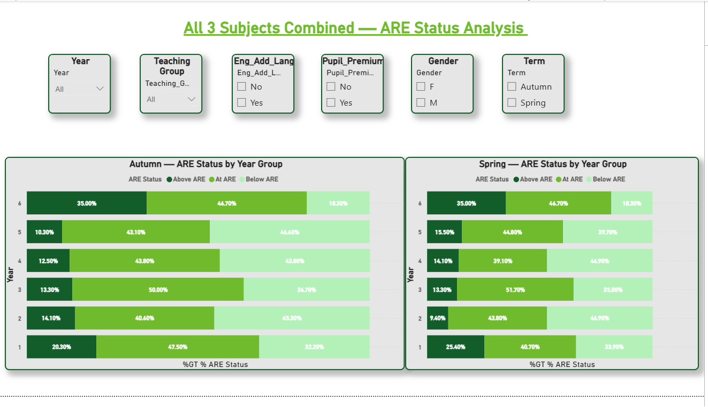
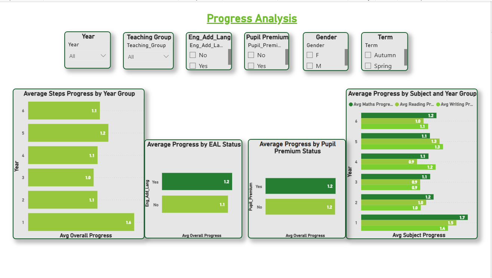

Project Case Study · Education Data
End-to-end analysis of anonymised assessment data for 365 pupils across 6 year groups — from raw Excel files to Databricks Medallion pipeline to a 3-page Power BI dashboard.
Scroll01 — The Brief
The Mead Educational Trust needed a clear, evidence-based picture of pupil attainment and progress across their primary school. The brief was to analyse anonymised assessment data for 365 pupils across Years 1 to 6, covering Reading, Writing and Mathematics performance in both the Autumn and Spring terms.
The analysis needed to identify attainment patterns, progress trends, and any gaps across key pupil characteristics — Pupil Premium (PP), English as an Additional Language (EAL), gender, teaching group and year group.
The task required building a complete analytical solution: a structured Excel workbook for data preparation, a multi-page Power BI dashboard for interactive exploration, and a full Medallion Architecture pipeline in Azure Databricks to support scalable, layered data transformation.
All data was handled in full compliance with anonymisation requirements, and findings were presented with actionable recommendations for the Trust.
02 — The Dashboard
What was built
The dashboard was built across three focused pages, each serving a distinct analytical purpose. Dynamic slicers allow filtering by Year Group, Teaching Group, Pupil Premium status, EAL status, Gender and Term — enabling the Trust to interrogate any combination of pupil characteristics instantly.
KPI cards surface headline figures at a glance. Clustered bar charts break down ARE status (Above / At / Below) across all year groups for each subject. Page 2 brings all three subjects together into a combined view for Autumn and Spring side by side. Page 3 focuses on progress — average steps progress by year group, EAL status, Pupil Premium status, and subject.



03 — Key Findings
Critical Finding — Pupil Premium Gap
0% Above ARE
Year 4 Pupil Premium pupils — All 3 Subjects Combined, both Autumn and Spring terms.
This was the most pronounced attainment gap in the dataset. Non-PP pupils in Year 4 achieved 19.5% (Autumn) and 22% (Spring) Above ARE. In Year 6, the gap widened further: 46.4% of non-PP pupils achieved Above ARE compared to just 25% of PP pupils — a 21.4 percentage point gap. Despite this, PP pupils' average steps progress (1.2) was in line with the school average, indicating the gap is rooted in baseline attainment rather than in-year progress rates.
Pattern 01
Pattern 02
Pattern 03
Pattern 04
Pattern 05
Pattern 06
04 — Conclusions
Conclusion 1 — Attainment Patterns Across Year Groups
Year 6 records the highest proportion of pupils working above ARE in Spring across Reading (35%), Writing (35%) and Mathematics (35%). This may reflect particularly strong teaching in upper year groups or the cumulative impact of learning over time.
In contrast, Year 2 records the lowest Above ARE rates in Reading and Mathematics, while Year 3 records the weakest Writing performance. The dip between Years 2 and 3 may suggest a transition challenge as pupils move into more advanced curriculum content.
Year 1 demonstrates the strongest average steps progress between terms, indicating strong early development — though Year 3's lower progress rate warrants closer monitoring.
Conclusion 2 — Attainment Gap for Pupil Premium Pupils
PP pupils consistently achieve lower Above ARE percentages compared to non-PP pupils across several year groups. The most pronounced gap appears in Year 4, where PP pupils recorded 0% Above ARE across all three subjects combined in both terms, compared to 19.5% (Autumn) and 22% (Spring) for non-PP pupils.
Critically, the average steps progress for PP pupils (1.2) is in line with the school average. This suggests PP pupils are progressing at a similar rate to their peers, but from a lower starting point — meaning the attainment gap is more strongly linked to baseline attainment than to differences in in-year progress.
Conclusion 3 — EAL, Gender & Cross-School Variation
EAL pupils perform comparatively strongly in several year groups. In Year 1 Spring, 30.6% of EAL pupils achieved Above ARE compared to 0% of non-EAL pupils. EAL pupils also demonstrate slightly higher average steps progress (1.2 vs 1.1), suggesting effective support provision or strong baseline performance within this cohort.
Gender differences are evident: male pupils generally achieve higher Above ARE percentages, particularly in Year 1 (29.4% male vs 20% female) and Year 6 (40% male vs 30% female). However, female pupils demonstrate more consistent progress across year groups.
Overall, variation in attainment between year groups is more pronounced than variation in progress rates. Specific year groups and pupil characteristics show persistent attainment gaps that merit further investigation and targeted intervention.
05 — Recommendations
Targeted Pupil Premium intervention — especially Year 4
The 0% Above ARE finding for Year 4 PP pupils across all three subjects in both terms requires urgent, targeted support. Given that PP pupils are progressing at the same rate as peers, interventions should focus on baseline attainment — earlier identification and tailored catch-up provision.
Investigate the Year 2–3 transition dip
Year 2 and Year 3 consistently record the lowest Above ARE rates in Reading, Maths and Writing respectively. The Trust should examine curriculum transition structures between KS1 and lower KS2 to understand whether content difficulty, teaching approach or pupil readiness is driving the dip.
Share EAL strategies across year groups
EAL pupils are outperforming expectations in Year 1 Spring and demonstrating above-average progress overall. The Trust should identify and document the approaches being used with this cohort and explore whether similar strategies can be replicated across other year groups and pupil groups.
Monitor Year 3 progress closely
Year 3 records the lowest average progress in the school. This should be investigated further — whether it reflects teaching group composition, subject-specific challenges, or a structural issue in the Year 3 curriculum delivery — to prevent the gap from widening into upper KS2.
Reduce the PP attainment gap in Year 6
The 21.4 percentage point gap between PP and non-PP pupils in Year 6 is significant, particularly given the proximity to KS2 SATs. Focused booster sessions, mentoring or small group provision should be considered to close this gap ahead of national assessments.
Continue tracking progress equity, not just attainment
The finding that progress rates are equitable while attainment gaps persist is nuanced and important. The Trust should continue monitoring both metrics separately in future assessments. Closing the attainment gap will require addressing baseline starting points — not simply improving in-year progress for all pupils equally.
06 — Data Engineering
Beyond the dashboard, a full Medallion Architecture pipeline was built in Azure Databricks using Delta Lake — demonstrating how this analysis could scale to support ongoing, automated reporting at trust level. The pipeline transforms raw Excel files through structured layers to clean, aggregated Gold views.